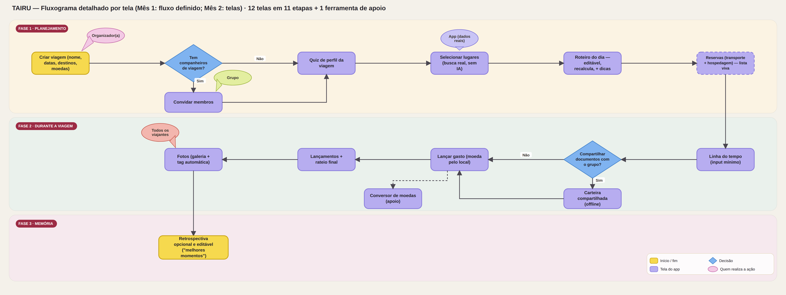

A partir dos resultados do Mês 1 (10 entrevistas do ICP + o padrão já confirmado com Nelson e Vera), esta página propõe um fluxo de ponta a ponta simplificado para o TAIRU — sem IA generativa, sem onboarding fixo, sem funcionalidades que ninguém pediu. Cada etapa vem com a dor que resolve e a evidência que a sustenta. Este documento ainda faz parte do Mês 1 (definição do fluxo); o redesenho das telas em si é o trabalho do Mês 2.
Por que este fluxo, e por que agora
Resultados e conclusões da validação do ICP (10 entrevistas, 10-15/ago/2026), comparados com Nelson e Vera
Planejamento concentrado em 1 pessoa — confirmado em 10/10. É o padrão mais universal da amostra, inclusive quando essa pessoa não é a própria entrevistada (caso de Anna, que delega à amiga ou a uma agência). Pilar do fluxo: alguém sempre carrega o peso de organizar — o fluxo precisa permitir dividir esse peso sem obrigar ninguém a fazer isso.
"Viaja sempre acompanhado" é o padrão MENOS universal — só 4/10 fortes. Metade da amostra (Bia, Elba, Emi, Lu, Luis) alterna viagens solo e em grupo. Implicação direta pro fluxo: colaboração não pode ser obrigatória, e o app precisa funcionar bem sozinho.
Desejo de colaboração/sugestões de terceiros — 8/10 reagem bem. Mas com exceções reais: Emi não quer expor todos os detalhes ao parceiro (preserva a "mágica" da viagem); Bia só valoriza com segurança/garantias. Colaboração tem que ser opt-in, não tudo-ou-nada.
Perfil de viagem muda a cada vez — confirmado em 9/10. Emi é a única exceção (perfil urbano consistente). Confirma, na prática, que o quiz de onboarding único e fixo do app atual é um erro conceitual — cada viagem precisa do seu próprio perfil.
Regras que valem para todas as etapas abaixo, não só para uma tela isolada
Um passo de cada vez, sem menus com opções simultâneas ambíguas. Corrige o achado C6 do diagnóstico (navegação confusa) e o alerta espontâneo de Beto, Emi e Luis contra rigidez — aqui "linear" significa fácil de seguir, não engessado: dá pra pular qualquer etapa opcional.
Nenhuma etapa exige convidar ninguém. O app funciona de ponta a ponta no modo solo. Resposta direta ao Padrão 2 (metade do ICP viaja sozinha às vezes) e à ressalva de Emi.
Toda sugestão vem de dados reais (agenda cultural, eventos, distância/tempo) — nunca de texto gerado. Resposta direta à C2 (a única automação do app atual, geolocalização por IA, errou) e à H1b do plano de validação.
Documentos e roteiro salvos localmente. Resposta ao pedido explícito de Beta ("fácil/offline/acessível a idosos") e à ansiedade de Anna com perda de sinal.
Cada campo tem um valor default sensato; nada obriga preenchimento detalhado. Resposta a Nelson (só registrou eventos grandes porque input manual cansava) e a Lu ("quando o bagulho começa a entravar, eu desisto").
Toda funcionalidade abaixo tem pelo menos 1 entrevistado do Mês 1 ou o caso de Nelson/Vera como evidência direta — nada foi incluído por intuição de produto.
11 etapas em 3 fases: planejar, viajar, guardar a memória. Cada etapa é opcional além da criação da viagem em si.
Tela única de criação: nome da viagem, período, e campos de destino e moeda que aceitam múltiplos valores desde o início (não 1 único destino/1 única moeda, como hoje).
Pedido literal de Vera: "Destino(s)" e "Moeda(s)" no plural — ela não conseguia registrar uma viagem com mais de um destino no app atual. No ICP, viagens multi-destino ou multi-moeda aparecem em pelo menos 5/10 entrevistas (tema recorrente de controle financeiro disperso entre moedas).
Um botão "Convidar" visível mas nunca bloqueante. Quem não convida ninguém segue o fluxo inteiro sozinho, sem telas vazias nem mensagens de erro.
Metade do ICP (Bia, Elba, Emi, Lu, Luis) alterna entre viagens solo e em grupo — "sempre acompanhado" não é universal. Um fluxo que força convite exclui esse grupo. Além disso, o convite de convidados foi exatamente o que falhou tecnicamente com Nelson.
2-3 perguntas rápidas (relax x urbano, ritmo, orçamento aproximado) repetidas a cada nova viagem, nunca só uma vez no onboarding da conta. As respostas alimentam diretamente as etapas seguintes: personalizam as dicas locais (etapa 5) e ajudam a ordenar as sugestões do roteiro combinado (etapa 4) de acordo com o perfil daquela viagem específica. Além disso, essas respostas vão se acumulando de viagem em viagem e formam, aos poucos, um perfil de gostos pessoais do usuário — diferente do perfil da viagem, que muda a cada vez — sem precisar de uma etapa extra de cadastro nem de travar esse perfil num quiz único no primeiro contato com o app.
Padrão 4 confirmado em 9/10: o perfil de viagem muda a cada vez (só Emi tem perfil urbano consistente). Um quiz único e fixo — como o app atual tem hoje — foi identificado como erro conceitual já na análise de usabilidade original. Beto também sinalizou que topa trocar de método "se ajudar orçamento/roteiro por perfil" — é justamente esse quiz curto que dá ao roteiro e às dicas o contexto que hoje não existe. A construção gradual do perfil de gostos é a própria recomendação da análise de usabilidade original: em vez de um quiz fixo no primeiro contato — que a própria Vera sentiu não influenciar nada nas sugestões —, extrair o perfil de gostos aos poucos, a partir do quiz de cada viagem, até formá-lo organicamente ao longo do tempo.
Ao entrar nessa etapa, logo após o quiz (etapa 3), o app já sugere lugares e atrações buscados em fontes reais da internet (sem IA generativa), filtrados pelo destino e pelo perfil da viagem — a pessoa marca o que quer visitar a partir dessas sugestões ou adiciona algo por conta própria. Quem topar participar marca os lugares/atrações que quer visitar; o app devolve um roteiro dia a dia que combina as escolhas de todo o grupo, otimizado por distância e tempo — e pelo perfil informado no quiz (por exemplo, priorizando dias mais leves para quem marcou "relax"). O roteiro não é fixo: dá pra arrastar um lugar pra outro dia ou marcar se foi ou não a cada ponto, e o app recalcula o resto do roteiro a partir do que sobrou — sem que uma pessoa precise montar tudo, nem que alguém precise ceder tudo.
Pedido original de Nelson (otimizar a viagem quando cada um da família quer ir a um lugar diferente); trazido espontaneamente por Pri no Mês 1 e bem recebido por Beta, Beto e Vania quando apresentado. Quem não quer participar (como Emi, que prefere preservar a "mágica") simplesmente não usa esta etapa — o roteiro sai só das escolhas de quem participou. A flexibilidade de mover e recalcular responde direto ao Risco 2 do Mês 1: Beto, Emi e Luis alertaram, sem que fosse perguntado, contra um app que "engesse" a viagem — um roteiro sugerido só funciona se der pra mudar de ideia no meio do caminho sem travar o resto do plano. A busca de sugestões usa a mesma regra já aplicada nas dicas locais (etapa 5): dados reais de fontes públicas, nunca texto gerado por IA — o mesmo princípio que corrige a C2 do diagnóstico (a geolocalização por IA que errou).
Ao inserir cidade e data, o app mostra eventos e informações práticas reais daquele período (agenda cultural, regras, costumes) — nunca texto gerado por IA. O perfil do quiz (etapa 3) direciona quais dicas aparecem primeiro — eventos culturais pra quem marcou perfil urbano, dicas de descanso pra quem marcou relax.
Foi o pedido nº1 de Nelson (dicas locais e culturais pra evitar perrengues) e aparece em 6/10 das entrevistas do ICP (Anna, Emi, Lu, Vania, Elba, Pri). A restrição "sem IA generativa" existe porque a única automação já testada no app (geolocalização por IA) errou — não se reintroduz o mesmo risco onde a confiança já foi perdida.
Uma lista de reservas — voos, trens, ônibus, hospedagens — com campos completos (transporte: número do voo, horário de partida E chegada, companhia aérea; hospedagem: check-in e check-out separados, hoje um único campo de "data e horário"). Cada item pode ser adicionado por preenchimento manual ou enviando o voucher/confirmação (PDF ou print), que o app lê sozinho — a pessoa só revisa e confirma. O ponto principal: essa tela funciona como a de documentos (etapa 8) — uma lista aberta, não um formulário único preenchido de uma vez só. Dá pra adicionar a próxima hospedagem ou trecho de transporte durante a própria viagem, não só antes de embarcar.
Correção direta de dois bugs de estrutura de dados reportados por Vera com prints específicos: falta número de voo/horário de chegada, e falta horário de checkout. Bia e Beto também descreveram a busca de passagens como a tarefa mais tediosa do planejamento. Como o público geralmente reserva em outras plataformas e já tem o voucher em mãos, o upload com preenchimento automático elimina a redigitação manual — a mesma fricção que fez Nelson e Lu abandonarem input manual em outras etapas (não é IA generativa: é extração de dados de um documento que a pessoa já possui, sempre com revisão antes de confirmar). A estrutura de lista, em vez de formulário único, reflete a realidade de planejamento: ninguém tem 100% das reservas fechadas antes de viajar — hospedagem e transporte de trechos seguintes costumam ser reservados ao longo da própria viagem, o mesmo padrão que já usamos nos documentos (etapa 8).
Edição rápida, sem obrigar granularidade — dá pra registrar só os eventos grandes e ignorar o resto, sem que o app cobre preenchimento completo.
Nelson só registrou os eventos grandes da viagem porque achou o input manual cansativo — e mesmo assim deu nota 7/10. Lu descreve abandonar ferramentas que "entravam" sua experiência. Um input opcional e leve evita repetir esse atrito.
Documentos (passaporte, seguro, reservas) centralizados e acessíveis offline; quem está no grupo pode ver os documentos dos outros membros em caso de emergência (bateria zerada, item perdido).
Corrige o bug real reportado por Vera ("URL do documento não disponível"). Responde à ansiedade de Anna (mantém redundância celular+nuvem+impresso por medo de perder acesso) e ao medo concreto de Elba de perder o passaporte e ser tratada como suspeita no aeroporto. Compartilhar entre membros do grupo é uma rede de segurança que nenhuma das duas tem hoje sozinha.
Cada membro lança seus próprios gastos; ao lançar, basta informar o local (cidade/país) — o app já reconhece a moeda local sozinho e faz a conversão pra moeda de referência da viagem, sem precisar selecionar a moeda manualmente toda vez. A tela mostra o que cada pessoa registrou e, ao final, monta um rateio consolidado — quem gastou quanto e quem deve pra quem, no estilo Splitwise.
Resolve o gasto inesperado de Anna por falta de referência de câmbio e o controle reativo de Vania ("só vejo quando a fatura chega"). Reconhecer a moeda pelo local evita exatamente o erro que gerou o gasto inesperado da Anna — ela não tinha como saber a taxa de câmbio na hora H. O rateio ao final é a própria evolução que a análise de usabilidade já recomendava para a tela de Gastos atual ("cada membro cadastra seus próprios gastos, de forma enxuta, e o app cuida da divisão entre o grupo automaticamente") — e é o que fecha o ciclo pra quem viaja em grupo, sem exigir que ninguém acerte contas na mão depois.
Acesso simplificado à galeria do celular para envio de fotos ao longo da viagem, com uma tag automática de qual membro do grupo enviou cada uma.
Beto reclamou da perda de qualidade das fotos compartilhadas por WhatsApp; Vania descreve fotos "dispersas" que ninguém organiza depois; Beta lamenta não ter tempo/energia para montar o álbum pós-viagem ("eu peco... o pós eu não faço"). Esta etapa também alimenta a retrospectiva final (etapa 11).
Ao final da viagem, um resumo automático estilo "retrospectiva anual" das fotos e destaques, com contribuição de todos os membros, pronto pra guardar e compartilhar. É opcional — a pessoa escolhe se quer gerar a retrospectiva ou não, com um convite simples ao final da viagem, sem forçar essa etapa. E é editável: depois de gerada, dá pra trocar fotos, reordenar destaques e ajustar o texto antes de salvar ou compartilhar — a retrospectiva automática é o ponto de partida, não a versão final.
Foi a funcionalidade favorita de Nelson depois de usar o app de verdade — mas no Mês 1, quando só descrita (sem uso real), gerou ceticismo em Bia e Beto. Conclusão do Mês 1: essa funcionalidade se prova no uso, não na promessa. Por isso o desenho aqui não vende a retrospectiva como argumento de entrada no app — ela aparece como recompensa ao final, quando a pessoa já viveu o valor de usar o app durante a viagem.
Quantas telas cada etapa deve virar no Mês 2, e onde dá pra juntar coisas na mesma tela pra agilizar o processo
| Etapa | Tela(s) proposta(s) | Sugestão pra agilizar (mesma tela) |
|---|---|---|
| 1. Criar a viagem | 1 tela: nome, datas, destino(s) e moeda(s) | Os 4 campos já ficam juntos numa única tela de criação, em seções — evita o padrão comum de 1 tela por campo. |
| 2. Convidar companheiros | 1 tela (opcional, pode ser pulada): convidar + status | Enviar convite e ver quem já aceitou ficam na mesma tela, em vez de uma tela de envio e outra de status separada. |
| 3. Quiz de perfil da viagem | 1 tela: as 2-3 perguntas numa rolagem só | Diferente do quiz atual ("Pergunta 1 de 7", uma tela por pergunta), as poucas perguntas cabem numa tela só com rolagem — de 7 telas pra 1. |
| 4. Roteiro combinado e flexível | 2 telas: (a) selecionar lugares, com sugestões de busca real (sem IA); (b) roteiro dia a dia, editável | Mover, marcar "feito/pulei" e recalcular acontecem direto na tela do roteiro (b) — sem tela extra só pra editar. As dicas locais (etapa 5) viram uma aba dentro dessa mesma tela, filtrada pelo dia. |
| 5. Dicas locais | 0 telas novas — aba dentro da tela de roteiro (4b) | Como a pessoa já está olhando o roteiro por dia, as dicas daquele dia aparecem ali mesmo — evita uma tela e uma navegação a mais. |
| 6. Reservas (transporte + hospedagem) | 1 tela: lista de reservas (abas transporte/hospedagem) + adicionar item, a qualquer momento — manual ou upload de voucher | Igual ao padrão da etapa 8 (documentos): uma lista viva, não um formulário único. Antes eram 2 telas separadas — agora é 1, no mesmo modelo de "lista + adicionar". |
| 7. Linha do tempo | 1 tela: visualização + adicionar evento | Adicionar evento é uma ação (botão +) dentro da própria linha do tempo, não uma tela de cadastro separada. |
| 8. Documentos compartilhados | 1 tela: lista de documentos + upload | Upload de documento novo é uma ação dentro da própria lista (botão +), sem tela dedicada. |
| 9. Financeiro com rateio final | 2 telas: (a) lançar gasto, com moeda detectada pelo local informado; (b) lançamentos + rateio, em abas | "O que cada um lançou" e "rateio final" são duas abas da mesma tela (b), em vez de duas telas separadas. |
| 10. Fotos | 1 tela: galeria da viagem + enviar | Enviar foto é uma ação dentro da própria galeria (acesso direto à galeria do celular), sem tela de upload separada. |
| 11. Retrospectiva (opcional e editável) | 1 tela: a retrospectiva gerada, com edição inline (trocar fotos, reordenar, ajustar texto) | A pergunta "quer gerar a retrospectiva?" é um modal rápido, não uma tela cheia — e a edição acontece na própria tela da retrospectiva, sem tela separada de "editar". |
| Ferramenta de apoio: Conversor de moedas | 1 tela — acessível a qualquer momento, não amarrada a uma etapa específica | Reaproveita a mesma lógica de câmbio da etapa 9 (moeda por local); não precisa de tela nova de configuração. |
As 12 telas das 11 etapas acima + 1 ferramenta de apoio, desenhadas em nível de tela — com pontos de decisão e quem realiza cada ação

Tão importante quanto o que entrou: decisões explícitas de não incluir
A única automação por IA já testada no app (geolocalização) falhou (C2 do diagnóstico) e nenhum entrevistado do Mês 1 pediu "inteligência artificial" — pediram dados confiáveis. Reintroduzir IA generativa arriscaria repetir a mesma perda de confiança, sem que ninguém tenha pedido isso.
Substituído pelo quiz por viagem (etapa 3) porque o Padrão 4 (perfil muda a cada vez) é o mais confirmado da amostra — um perfil fixo por conta não reflete como essas pessoas realmente viajam. O mesmo vale para o perfil de gostos pessoais: em vez de uma etapa dedicada no cadastro, ele se forma aos poucos a partir das respostas acumuladas do quiz por viagem — exatamente como a análise de usabilidade original recomendou no lugar do quiz fixo de 7 perguntas que existe hoje.
Visão rápida de defensibilidade: cada linha do fluxo, a dor que resolve e quem a validou
| Etapa do fluxo | Dor que resolve | Evidência (Mês 1 / Nelson & Vera) |
|---|---|---|
| 1. Multi-destino / multi-moeda | Impossível registrar viagens reais com mais de 1 destino ou moeda | Vera (bug reportado com prints); 5/10 do ICP com tema de moedas dispersas |
| 2. Convite opcional | Excluir viajantes solo de um app "para grupos" | Padrão 2 (só 4/10 fortes em "sempre acompanhado"); colaboração quebrada com Nelson |
| 3. Quiz por viagem (constrói perfil de gostos aos poucos) | Perfil de viagem que não reflete a viagem atual; perfil de gostos que nunca se forma (Vera: "quiz não parece influenciar nada") | Padrão 4 (9/10); Vera; recomendação original da análise de usabilidade |
| 4. Roteiro combinado e flexível | Um só monta tudo; escolhas do grupo não se conversam; roteiro fixo que não se adapta a mudanças no meio da viagem; sugestões de lugares hoje vêm de geolocalização por IA, que já falhou (C2) | Nelson (pedido original); Pri (espontâneo); Beta/Beto/Vania (endosso); Risco 2 — Beto/Emi/Luis contra engessamento |
| 5. Dicas locais reais | Falta de informação prática/cultural do destino | Nelson (pedido nº1); 6/10 do ICP (Anna, Emi, Lu, Vania, Elba, Pri) |
| 6. Reservas — lista viva + upload de voucher | Dados essenciais de voo e checkout ausentes; redigitação manual de reservas feitas em outras plataformas; formulário único não reflete que reservas seguintes são feitas ao longo da própria viagem | Vera (bugs reportados com prints); Bia/Beto (fricção com passagens); Nelson/Lu (input manual excessivo). A estrutura em lista (em vez de formulário único) é decisão de produto da Adriana, no mesmo padrão já usado nos documentos (etapa 8). |
| 7. Linha do tempo leve | Input manual excessivo derruba o uso | Nelson (só registrou eventos grandes); Lu ("eu desisto") |
| 8. Documentos compartilhados offline | Perda de acesso a documentos essenciais em viagem | Vera (bug real); Anna (ansiedade de redundância); Elba (medo de perder passaporte) |
| 9. Financeiro com rateio final + moeda automática | Gasto inesperado / controle reativo / acerto de contas manual no fim da viagem; ansiedade de câmbio (Anna, que não sabia a taxa na hora H) | Anna, Vania (dor real); recomendação já feita na análise de usabilidade original. Reconhecer a moeda pelo local é decisão de produto da Adriana, direcionada ao mesmo caso da Anna. |
| 10. Fotos com tag automática | Fotos dispersas, sem curadoria pós-viagem | Beto, Vania, Beta — tema recorrente em 5/10 |
| 11. Retrospectiva no final, opcional e editável | Falta de memória coletiva bonita da viagem; retrospectiva automática nem sempre reflete o que a pessoa quer guardar | Favorita de Nelson após uso; ceticismo de Bia/Beto só na descrição. A edição inline é decisão de produto da Adriana. |
| Ferramenta de apoio: Conversor de moedas | Ansiedade de câmbio fora do momento de lançar um gasto — ex.: conferir preço antes de comprar | Anna (dor real, Mês 1). Existir como ferramenta independente é decisão de produto da Adriana. |
Ponto de partida para o redesenho de telas do Mês 2 — o que já existe hoje no TAIRU e só precisa de revisão de usabilidade, o que já existe mas muda de comportamento/dado, e o que é inteiramente novo
| Funcionalidade | Categoria | O que muda e por quê |
|---|---|---|
| Destino e moeda da viagem | Modificado | Hoje aceita só 1 destino e 1 moeda por viagem. Passa a aceitar múltiplos valores desde a criação — pedido literal da Vera ("Destino(s)"/"Moeda(s)"). |
| Convite de membros | Modificado | Hoje só por e-mail, lista de contatos sugeridos inconsistente entre sessões, status pendente não aparece dentro da própria viagem. Passa a ter link compartilhável e status visível na viagem, sempre opcional. |
| Quiz de onboarding | Modificado | Hoje é único, fixo na conta, com seleção única na 1ª pergunta, e a própria Vera notou que "não parece influenciar nada nas sugestões". Passa a se repetir a cada viagem, com seleção múltipla, tratado como preferência daquela viagem — e as respostas acumuladas ao longo do tempo formam organicamente o perfil de gostos do usuário, sem etapa de cadastro dedicada. |
| Selecionar lugares / roteiro combinado e flexível | Novo | Não existe hoje nenhuma forma de combinar as escolhas de lugares de vários membros num roteiro só. Nasce do pedido original de Nelson e do endosso de Pri/Beta/Beto/Vania no Mês 1 — e do Risco 2 (Beto, Emi, Luis): o roteiro sugerido pode ser reorganizado e recalculado a qualquer momento, em vez de travar a viagem num plano fixo. |
| Dicas locais por cidade/data | Novo | Não existe hoje — é diferente da geolocalização por IA (usada só pra marcar local de uma atividade, e que errou no teste de usabilidade). Substitui a promessa de "automação" por dados reais, sem IA generativa — mesma regra usada na sugestão de lugares (etapa 4), que também busca em fontes reais da internet, nunca por IA generativa. |
| Reservas (transporte + hospedagem) | Modificado | Hoje faltam número do voo e horário de chegada no transporte (bug reportado pela Vera com prints), e hospedagem tem um único campo de "data e horário" em vez de check-in/check-out separados (outro bug da Vera). Campos passam a ser completos, com opção de upload de voucher pra preencher tudo automaticamente — e a tela vira uma lista viva, no mesmo padrão da carteira de documentos, já que ninguém tem 100% das reservas fechadas antes de viajar. |
| Linha do tempo | Revisto | Filtro de categoria pré-aplicado sem indicação visual de que é um filtro, e ícone de "3 pontinhos" sem função nenhuma. Revisão de clareza, sem mudar o que a tela faz. |
| Carteira de documentos | Modificado | Hoje é individual, e teve bug real reportado pela Vera ("URL do documento não disponível"). Passa a ser compartilhada entre os membros do grupo, com acesso offline. |
| Controle financeiro (Gastos) | Modificado | Hoje é moeda única, exige criar um evento pra lançar um gasto, e o valor aparece em destaque exagerado em várias telas (achados de usabilidade + Vera). Passa a aceitar múltiplas moedas com reconhecimento automático pelo local informado, lançamento direto por cada membro, e um rateio final consolidado — evolução que a própria análise de usabilidade já recomendava. |
| Conversor de moedas | Novo | Não existe hoje. Ferramenta de apoio independente, acessível a qualquer momento, complementar à conversão automática ao lançar um gasto — pensada pra ansiedade de câmbio da Anna em momentos fora do lançamento (ex.: antes de uma compra). |
| Fotos / galeria | Modificado | Falta identificar quem enviou cada foto (capacidade nova) e há bug de navegação — falta botão "voltar" no estado vazio, reportado pela Vera. Ambos entram no redesenho. |
| Retrospectiva "melhores momentos" | Revisto | Já existe e já funciona bem — foi a funcionalidade favorita de Nelson depois de usar o app de verdade. Não muda de escopo, só de posicionamento: deixa de ser gancho de entrada e vira recompensa no final, e passa a ser explicitamente opcional (achados do Mês 1). |
| Menções | Revisto | Tela trava em carregamento indefinido hoje — achado da análise de usabilidade. Corrigir e simplificar antes de qualquer redesenho visual; não está no fluxo principal proposto. |
Fluxo, fluxograma e tabela de revisão fecham o Mês 1 — os 3 passos seguintes
De acordo com o fluxo definido aqui — sem adicionar funcionalidades novas.
Protótipo navegável com as telas novas.
Validar o protótipo com as pessoas já entrevistadas.